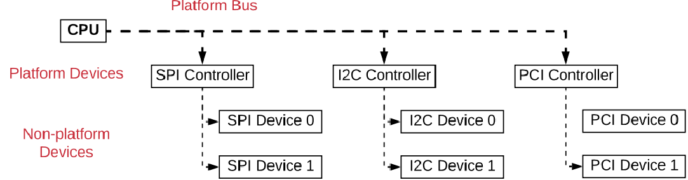
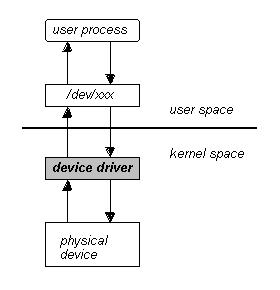
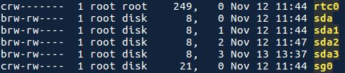

Overview about Linux Device Driver
Tài liệu này mô tả các khái niệm chung về Linux Device Driver. Cần có các bài tìm hiểu chuyên sâu về các mục trong phần này.
Linux System Overview

Linux Device Model
Các thiết bị kết nối đến CPU được gọi là Device. Mỗi device này cung cấp các tài nguyên khác nhau đến người dùng, Linux kernel thông qua device driver để giao tiếp đến device và sử dụng các tài nguyên của device đó.
Các device kết nối đến CPU bằng một bus. Nó có thể là các bus giao tiếp với thiết bị ngoại vi như SPI, I2C, hoặc cũng có thể là system bus của hệ thống. Lưu ý rằng Linux Kernel cũng nhìn bus giống như một device và tất nhiên device thì cần phải được khai báo. Do đó Linux Kernel cũng cung cấp các quy trình để đăng ký một bus với hệ thống.
Trong quá trình khởi động, dựa vào thông tin mà device-tree cung cấp về các device trong hệ thống, Linux Kernel gọi đến các device driver tương ứng để dò tìm và thêm thiết bị vào hệ thống.
Platform device là các device đầu tiên được dò tìm và thêm vào hệ thống. Đơn giản có thể hiểu các platform device là các thiết bị được quản lý trực tiếp trong vùng nhớ của CPU, là các thực thể được nối với system bus của CPU. System bus này được gọi là platform bus.
 Figure. An example about device model
Kernel Module
Định nghĩa
Kernel Module là một đoạn mã có thể được cài đặt hoặc gỡ cài đặt khỏi Kernel theo yêu cầu. Kernel module giúp mở rộng chức năng cho kernel mà không cần phải khởi động lại hệ thống. Device Driver là một loại kernel module. Trong trường hợp cần thêm một chức năng vào kernel trong khi không có kernel module, người phát triển sẽ cần phải build lại cả hệ thống.
Một blog viết về Kernel Module tương đối hay và chi tiết có thể xem thêm tại đây. Blog được viết bởi Derek Molloy.
Kernel Module cũng được định nghĩa tại một bài viết của ArchLinux (một Linux Distro) tại đây. Ngoài ra, tai trang web tldp.org có một chuỗi các bài viết liên quan đến phát triển Kernel module (The Linux Kernel Module Programming Guide).
Có hai dạng Kernel module: build-in và loadable file. Trong đó built-in module được tích hợp vào Kernel Image và được cài đặt vào hệ thống trong quá trình khởi động kernel. Người lại, loadable module có thể được người dùng cài đặt vào hệ thống sau khi kernel đã khởi động thành công.
Loadable Kernel Module (LKM) được cài đặt vào hệ thống bằng các câu lệnh như modprobe hoặc insmod.
module_init & module_exit
Kernel module có thể được hiểu là một chương trình chạy trong Kernel Space, nhưng không giống như chương trình bình thường, kernel module không bắt đầu bằng hàm "main".
Macro module_init() và module_exit() được sử dụng để đăng ký các hàm
khởi tạo và hàm hủy cho kernel module. Tùy thuộc vào kernel module là
built-in hay LKM mà nội dụng của module_init/exit sẽ khác nhau.
Trong trường hợp là built-in module, module_init sẽ gọi đến macro
_init_call dùng để đăng ký với hệ thống là module sẽ được khởi tạo
trọng quá trình init. Hai macro được định nghĩa trong linux/init.h.
In log trong kernel
Phương pháp debug cơ bản và phổ biến nhất khi đi phát triển một chương trình là in log chạy của chương trình đó ra màn hình hoặc file. Kernel module sử dụng lệnh prink thay vì printf như phát triển ứng dụng User space.
Ngoài ra có thể sử dụng thêm các họ hàm dev_ và pr_ để in thêm thông tin trong kernel module.
Cài đặt LKM module vào hệ thống
Để cài đặt LKM vào hệ thống có thể sử dụng lệnh insmod/rmmod/lsmod. Ngoài ra có thể dùng thêm modprobe. Quá trình sử dụng modprobe phức tạp hơn insmod, có thể đọc thêm [tại đây]. Trong quá trình cài đặt module vào hệ thống có thể thêm các paramtters cho module.
Để liệt kê toàn bộ thông tin của các module đang được cài đặt trong hệ thống có thể sử dụng lsmod. Lsmod đọc thông tin từ /proc/modules, người dùng có thể đọc trực tiếp từ text file /proc/modules để biết thêm được thông tin của các module đang chạy trong hệ thống.
Khi một module được cài đặt vào hệ thống, thông tin về module này có thể
được tìm thấy trong sysfs virtual file system /sys/module
Compile a kernel module
Để build một kernel module, Linux Kernel sử dụng một hệ thống gọi là
kbuild. Có thể đọc thêm thông tin về hệ thống kbuild này trong Kernel
Documentation (kbuild/modules.txt). Trong mục 2.2 của [1] có giới
thiệu về build kernel module.
Character Device Driver
Device Driver là một kernel module, có chức năng giao tiếp trực tiếp với phần cứng và cung cấp các giao diện để các module khác của kernel cũng như user có thể truy cập và sử dụng các tài nguyên liên quan đến các phần cứng tương ứng.
Tùy thuộc vào loại phần cứng tương ứng mà device driver được chia ra làm các loại khác nhau. Trong tài liệu LDD3, device driver được chia ra làm 3 loại chính: char module, block module và network module.
Trong đó character device sẽ được tập trung nghiên cứu trong tài liệu này.

Như vậy, một device driver nói chung cần thực hiện hai nhiệm vụ chính:
-
Cung cấp các giao diện để có thể giao tiếp được với User Space, qua đó các ứng dụng của người dùng có thể giao tiếp được với phần cứng thông qua các giao diện này.
-
Truy cập đến phần cứng. Device driver được sinh ra là để giao tiếp trực tiếp với phần cứng.
Trong tài liệu này sẽ tìm hiểu từng nhiệm vụ trên của Device Driver.
Device File
Device file hay special file là một giao diện để người dùng có thể giao tiếp được với device driver. Thông thường các device file xuất hiện trong /dev/ và được quản lý bởi virtual file system.
Người dùng thông qua các System Call để tương tác với device driver thông qua device file. Các System Call liên quan đến tương tác file được xử lý bởi hệ thống VFS (Virtual File System) như: open(), close(), read(), write(), mmpa()... Quá trình hoạt động của các system call này được mô tả rõ trong Chapter 12: The Virtual File System của sách Understanding Linux Kernel.

Vậy với một normal file, các người dùng có thể tác động gì được? Thông tin này có thể tìm hiểu qua từ khóa "Working with file in C".
Major & Minor
Mỗi Device File trong /dev/ được đặc trưng bởi hai tham số: <Major, Minor>.
- Major được sử dụng để xác định xem device đó tương ứng với driver nào.
- Minor mang thông tin của từng thiết bị, về cơ bản nhiều thiết bị có thể điều khiển bằng một driver, do đó trong một số hệ thống, driver sử dụng Minor để phân biệt giữa các thiết bị với nhau.
Major và Minor tạo thành một cặp số unsigned để đặc trưng cho một
device, gọi là Device Number. Kernel sử dụng kiểu dữ liệu dev_t để mô tả
hai tham số này.
Dev_t được định nghĩa trong header linux/types dưới dạng một số 32 bit.
typedef __u32 __kernel_dev_t;
typedef __kernel_dev_t dev_t;
Trong đó, 20 bit thấp được sử dụng cho Minor và các bit cao còn lại được
sử dụng cho Major. Các macro sử dụng cho dev_t như MKDEV, MAJOR, MINOR
được khai báo trong linux/k_dev_t.h.
Có thể tạo một Device File đơn giản bằng Command:
mknod /dev/coffee c 12 2.
Khai báo một Character Device File
Cấp phát Device Number
Hàm register_chrdev_region() được sử dụng để đăng ký device number.
int register_chrdev_region(dev_t from, unsigned count, const char
*name);
Quá trình này là cấp phát tĩnh dev_t, trong một số trường hợp yêu cầu
cấp phát này không thành công do yêu cầu của driver không phù hợp với
yêu cầu hiện tại của hệ thống. Trong trường hợp đó có thể sử dụng hàm
alloc_chrdev_region(). Nguyên mẫu của hàm đó như sau:
int alloc_chrdev_region(dev_t *dev, unsigned baseminor, unsigned
count,*const char *name);
Kết quả của quá trình cấp phát device number là Major và một dải Minor mà driver có thể sử dụng.
Đăng ký Character Device File
Kernel sử dụng một cấu trúc dữ liệu để lưu giữ thông tin của một
character device: struct cdev. Struct cdev được định nghĩa trong
linux/cdev.h bao gồm các trường thông tin ở bảng sau.
structcdev{
struct kobject kobj;
struct module *owner;
const struct file_operations *ops;
struct list_head list;
dev_t dev;
unsigned int count;
} __randomize_layout;
Mỗi char device tương ứng với một device number dev_t và có các
file_operations tướng ứng. Các file_operations (định nghĩa trong
linux/fs.h) được mô tả trong bảng sau.
struct file_operations {
ssize_t (*read) (struct file *, char __user *, size_t, loff_t *);
ssize_t (*write) (struct file *, const char __user *, size_t, loff_t *);
int (*mmap) (struct file *, struct vm_area_struct *);
long (*unlocked_ioctl) (struct file *, unsigned int, unsigned long);
[some feilds obmitted]
} __randomize_layout;
cdev_init & cdev_add
Trước khi khởi tạo và đăng ký một cdev với kernel, một vùng nhớ sử dụng cho biến cdev này phải được khởi tạo. Phương pháp đơn giản nhất là khai báo một biến toàn cục trong driver.
Quá trình cdev_init bản chất là trang bị file_openratons cho cdev và
thêm nó vào danh sách các thiết bị đã được khai báo trong hệ thống. Hàm
cdev_add tiến hành thêm cdev vào hệ thống.
Lưu ý nguyên mẫu hàm cdev_add như sau:
int cdev_add(struct cdev *p, dev_t dev, unsigned count);
Trong đó con trỏ p được trỏ đến biến cdev đã được khai báo, và dev_t
dev là device number đầu tiên trong dãy các device number liên quan đến
cdev này, count là số lượng các minor number liên tiếp sau MINOR(dev_t
dev) liên quan đến device này.
Giả sử ta tiến hành thêm một cdev như sau:
struct cdev mycdev;
dev_t mydevno = MKDEV(246, 0);
cdev_add(mycdev, mydevno, 4);
Và sau đó khởi tạo thêm 4 files.
mknod /dev/scull0 c 246 0
mknod /dev/scull1 c 246 1
mknod /dev/scull2 c 246 2
mknod /dev/scull3 c 246 3
Khi tiến hành đọc ghi các /dev/file này đểu trả về một dev_t duy nhất
<246, 0>.
Mutex
http://derekmolloy.ie/writing-a-linux-kernel-module-part-2-a-character-device/
MMAP
https://linux-kernel-labs.github.io/master/labs/memory_mapping.html
IOCTL
https://ufal.mff.cuni.cz/~jernej/2018/docs/predavanja06.pdf
Ioctl - Input Output Control được sinh ra để hỗ trợ người dùng khai báo thêm các câu lệnh mới phù hợp với từng dòng thiết bị.
Trong ví dụ liên quan đến bài đào tạo, led_controller_core có hai tham số có thể cấu hình được trong quá trình chạy:
-
SPEED: Tốc độ LED.
-
POSITION: Vị trí LED nháy.
-> Mục tiêu cần phải định nghĩa được một số câu lệnh để làm ví dụ trong quá trình phát triển.
Giao tiếp với phần cứng
Platform Device
Giao tiếp với phần cứng trong một hệ nhúng rất đa dạng. Phương pháp giao tiếp với phần tử trong hệ nhúng phụ thuộc vào loại thiết bị của phần tử đó. Trong phạm vi bài viết này sẽ tương tác với một loại thiết bị: platform_device.
struct resource
platform_get_resource thực hiện tìm kiếm tất cả các resource hiện tại có trong platform_device. Quá trình tìm kiếm dựa vào loại resource được định nghĩa trong linux/ioport.h. Các loại resource cơ bản như:
- IORESOURCE_MEM (memory)
- IORESOURCE_IRQ (interupt)